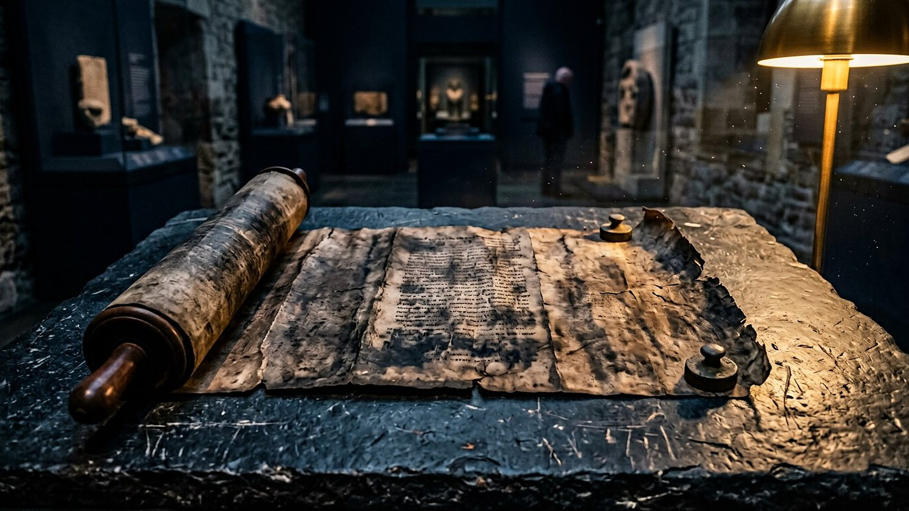
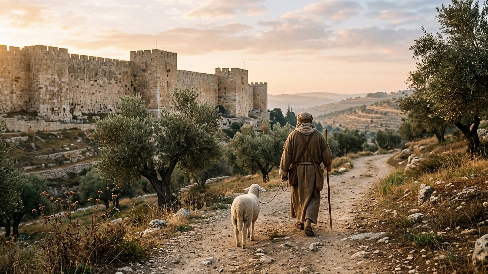
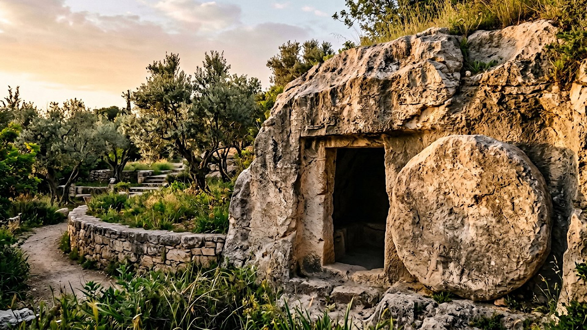

ANNONCE
ÉCHO RAPPORTÉ

Salle 19 — Isaïe 53 ACCOMPLIE
« Il a été blessé pour nos transgressions, brisé pour nos iniquités ; le châtiment qui nous donne la paix est tombé sur lui, et c'est par ses meurtrissures que nous sommes guéris. » — Isaïe 53:5 (d'après Crampon 1904)
Reconstitution numérique — le rouleau ouvert au chapitre 53.
La salle 09 a compté les détails messianiques un à un. Cette salle zoome sur un seul texte : le chapitre 53 d'Isaïe, portrait d'un « Serviteur » rejeté, souffrant, silencieux, mis à mort — puis exalté. Point de départ non négociable : le Grand rouleau d'Isaïe (1QIsaᵃ, vers 125-100 av. n. è., Musée d'Israël n° HU 95.57/27) contient ce chapitre, mot pour mot à de menues variantes près, avant l'ère chrétienne. Qui que soit le Serviteur, son portrait n'a pas été composé après les événements pour les faire coïncider.
Cliquez sur un trait du portrait : l'annonce, puis l'écho rapporté dans les récits sur Jésus.
ANNONCE
ÉCHO RAPPORTÉ

DÉBATTU
Depuis le Moyen Âge (Rachi, XIᵉ siècle), la lecture juive majoritaire voit dans le Serviteur Israël collectif, souffrant parmi les nations. La lecture chrétienne, dès le Iᵉʳ siècle, y voit un individu : les récits évangéliques et les Actes appliquent le chapitre à Jésus. Le musée retient la lecture individuelle — le portrait enchaîne des traits personnels (sa bouche, son sépulcre, son intercession) et le chapitre suit un personnage distingué du peuple dès Isaïe 49 — mais il ne cache pas que l'autre lecture existe, ancienne et argumentée.
DONNÉE HISTORIQUE
Le Targoum Jonathan, ancienne paraphrase araméenne, ouvre le chapitre par « Voici, mon serviteur le Messie prospérera », tout en reportant une partie des souffrances sur les ennemis d'Israël : signe qu'avant le Moyen Âge, une lecture messianique du texte circulait aussi dans le judaïsme. Et le livre des Actes (chapitre 8) montre un dignitaire éthiopien lisant précisément Isaïe 53:7-8 sur son char, demandant : « De qui le prophète dit-il cela ? De lui-même ou de quelqu'un d'autre ? » La question de cette salle est donc aussi vieille que le texte copié.
Un détail isolé peut être une coïncidence ; un portrait complet — rejet, souffrance subie pour d'autres, silence devant les accusateurs, mort parmi des criminels, sépulture d'un riche, puis jours prolongés — écrit dans un livre dont les copies préchrétiennes dorment au musée, compose le type même de prophétie que la salle 01 a défini : ancienne, précise, falsifiable. La salle 09 montre que ce chapitre n'est pas seul ; il en est la pièce centrale.
